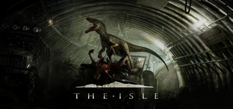
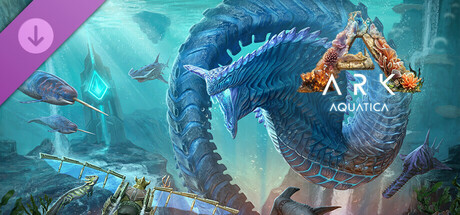
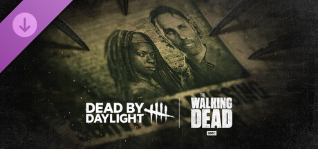
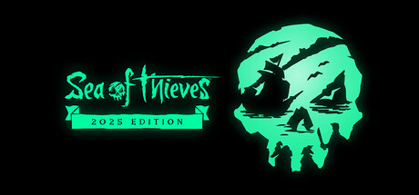

Trata-se de uma seleção fundamentada unicamente em preferências individuais, experiências próprias e critérios subjetivos, os quais podem — e naturalmente irão — variar amplamente de pessoa para pessoa. Em nenhuma hipótese essa lista pretende estabelecer qualquer tipo de verdade absoluta, consenso universal, parâmetro técnico definitivo ou hierarquia incontestável de qualidade. Reitero, com a máxima formalidade e ênfase: não se trata de uma avaliação oficial, acadêmica, técnica ou imparcial, mas sim de uma manifestação pessoal de gosto. Portanto, é perfeitamente legítimo, compreensível e esperado que outras pessoas discordem, tenham listas distintas ou adotem critérios completamente diferentes. Em suma, esta lista representa exclusivamente a minha visão particular e não deve, sob nenhuma circunstância, ser interpretada como uma afirmação objetiva ou universal.

The Isle is intended to be a gritty, open-world survival horror game. Explore vast landscapes of dense forest and open plains, traverse treacherous mountains and wade through dark swamps where horrors lurk. Hidden within are ruins that hold insight as to what came before. Through it all, keep in mind there is only one goal: survive. There is little in the way of hand holding or ulterior precepts to alter play styles or purpose. It's kill or be killed. In the end, the only one you can trust is yourself. Over the course of development the islands and their inhabitants will radically change, ever-evolving as players themselves learn how to flourish and thrive. Your mistakes will be punished. Expect no survivors.


Respawn into a new dinosaur survival experience beyond your wildest dreams… as ARK is reimagined from the ground-up into the next-generation of videogame technology with Unreal Engine 5! You awake on a mysterious island, your senses overwhelmed by the blinding sunlight and brilliant colors bouncing off every surface around you, the azure waters of a verdant Island lapping at your bare feet. A deep roar echoes from the misty jungle, jolting you into action, and you stand up – not afraid, but intrigued. Are you ready to form a tribe, tame and breed hundreds of species of dinosaurs and other primeval creatures, explore, craft, build, and fight your way to the top of the food-chain? Your new world awaits… step through the looking-glass and join it! ARK: Genesis Part Two! Your quest for ultimate survival is now complete with the launch of ARK: Genesis Part 2! Survivors will conclude the ARK storyline while adventuring through exotic new worlds with all-new mission-based gameplay. Discover, utilize and master new creatures, new craftable items, weapons, and structures unlike anything you have seen yet! The saga is now complete, and hundreds of hours of new story-oriented ARK gameplay await you! Purchased as part of the ARK: Genesis Season Pass you gain access to two new huge story-oriented expansion packs -- Genesis Part 1 and Genesis Part 2 (new!) -- as well as a 'Noglin' Chibi cosmetic, a ‘Shadowmane’ Chibi cosmetic, a new cosmetic armor set, and an in-game, artificially intelligent companion called ‘HLN-A’ who can scan additional hidden Explorer Notes found throughout the other ARKs. Features the voiceover talent of David Tennant (Doctor Who, Good Omens) playing the villainous Sir Edmund Rockwell, and Madeleine Madden (The Wheel of Time, Picnic at Hanging Rock, Dora and the Lost City of Gold) as in-game robotic AI companion HLN-A/Helena Walker.


Trapped forever in a realm of eldritch evil where even death is not an escape, four determined Survivors face a bloodthirsty Killer in a vicious game of nerve and wits. Pick a side and step into a world of tension and terror with horror gaming's best asymmetrical multiplayer. Survivors play in third-person and have the advantage of better situational awareness. The Killer plays in first-person and is more focused on their prey. The Survivors' goal in each encounter is to escape the Killing Ground without getting caught by the Killer - something that sounds easier than it is, especially when the environment changes every time you play.


Sea of Thieves offers the essential pirates experience, from sailing and fighting to exploring and looting – everything you need to live the pirate life and become a legend in your own right. With no set roles, you have complete freedom to approach the world, and other players, however you choose.